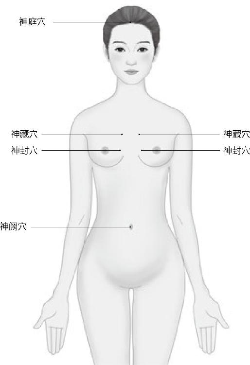
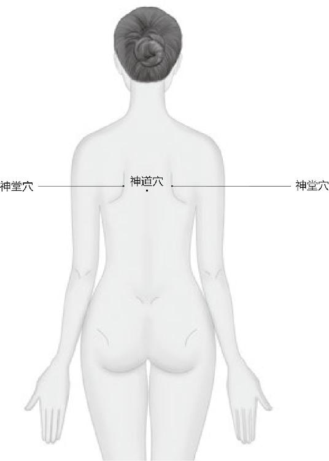

生活在天地之间，那最好跟上天地变化的节奏，做到天人合一。这样，你就能交到好运气，活得不累。
古代的人是最贴近自然的，什么时候该干什么事，清清楚楚，而过了这个时机，你就是再辛苦，出再多的力，流再多的汗，施再多的肥，也没用了。这个时间、节奏和脚步，古人把握得非常精准。
不要小看《黄帝内经》里讲的如此简单通俗的东西，你真要按它说的方法去实践，做事会很顺。否则，你要走背运，要倒霉。
梁冬：现在，我们要学习《素问》的第二篇——“四气调神大论”。请徐老师给我们破一下题。
什么是“和于术数”？古人认为“术”泛指谋生的技术，如果选择跟自个内心相抵触的职业，那是最下贱的职业，最不建议让人去选择。另外，奇数为阳，偶数为阴。生活中，我们也要学会选择适合自己的吉祥数字。
徐文兵：在《素问》的第一篇“上古天真论”里，我们已经聆听了黄帝老师岐伯的谆谆教诲，他诲人不倦，反复提到，上古之人——幸福快乐的人都能做到“法于阴阳，和于术数”，他们的所作所为都是按照阴阳的变化规律去做的，而一些不善于养生的短命之人呢，他们则是“不知持满，不时御神”。
“不时御神”的意思是什么？就是说他们不按昼夜和四季的变化去调整自己生命的节奏。
梁冬：因为生命是有节奏的。
徐文兵：生命的节奏要是和大自然的节拍一致的话，你的日子就过得很顺。否则的话，你就活得很累。所以岐伯在提到什么是“真人、至人、圣人、贤人”时，特别强调说：圣人、贤人也是根据四季的变化（调于四时）来安排自己身心作息节律的。这样，“调于四时”的内容就被他扩展开了，归结成一篇大的文章，就是我现在要讲的“四气调神大论”。
什么是“不知持满”？透支！
梁冬：“调神”作何解释？
生命的节奏要是和大自然的节拍一致的话，你的日子就过得很顺。否则，活得很累。
徐文兵：就是说人的意志，也就是我们出生后被培养出来的后天理性思维，可以干什么用呢？可以慢慢用来控制自己的情绪，安排起居作息，然后调摄自己的魂魄。
魂魄是先天赋予你的，改变不了，但你可以通过后天的训练，让自己的心和意和谐共振，让“神”本能地去按照你的意愿，按照一种新的规律去做，去发展，这就叫“调神”。
梁冬：心和意显然是不一样的。它们之间到底有什么不同呢？
徐文兵：举个例子，过年时我们经常说：祝您万事如意！其实还有一种更好的说法，叫“祝您称心如意”。很多人认为这两句话的意思一样，都是排比句，“祝我好”的意思，但这是不对的。
生活中很多事虽然称心，但不如意。而如意的，却不称心。怎么办？调神！不让它们老打架。
大家观察一下，生活中很多东西是称心的，但未必如意。如意的，未必就称心。
梁冬：此话怎解？
徐文兵：“心”是先天赋予你的那个本心，是本能的东西，不以后天意志为转移的。而“意”是人出生后被灌输培养、教育出来的。禅宗有个故事，说一个小和尚跟着老和尚第一次进城，小和尚从小就在庙里长大，没见过世面。走到大街上，突然看见许多花姑娘，他就问：“哎，师父、师父，这是什么？”师父说：“老虎啊，那是老虎，是要吃人的。”
晚上回到庙里后，师父看小和尚翻来覆去睡不着觉，就问：“你干吗呢？”小和尚说：“我想老虎。”
真正的幸福是称心如意！
这就是心和意的区别。小和尚发自本能、发自内心地喜欢看美丽的姑娘，想和她们亲近，这是他的本心，可他师父灌输给他的是什么呢？说那是老虎，要吃人的，很危险。这就叫“意”。所以小和尚的“心”和“意”就会老打架，这就是心和意的不一样。
小和尚将来怎么办呢？要么就顺心去做，一般就是还俗回家了，娶个老婆；要么就是消灭自己的欲望，慢慢地把出于自己本心的这种性欲——来自于先天本能的能量引导到另一条路上，去参禅悟道，开慧，转化成一些更高级别的快感。他有两条路可走。
梁冬：这不是存天理，灭人欲吗？
徐文兵：这不是灭人欲，是引导人欲。他要是灭人欲，干脆把自己阉割，做太监得了。把这种先天本能的能量引导到另一条路上，这叫开慧！
开慧就是把本能的能量引导到另一条路上。
还有一个例子也能说明“心”和“意”的区别，比如丈母娘选女婿的时候，她是动心还是动意？
梁冬：应该是动意了。
徐文兵：丈母娘挑女婿，一般会说：哎，这孩子有什么学历啊？是不是博士、硕士啊？有没有车？有没有房子啊？什么单位呀？结没结过婚？带没带小孩等等。她考虑的都是理性的、后天的一些东西。
那闺女选老公，她考虑的是什么问题呢？
一般来讲，她是先动心：这个人让我怦然心动，让我心头撞鹿。很多剩女找对象找不着，什么原因？没感觉。什么叫“没感觉”？没动心！没动神！碰上有感觉的都结婚了。所以矛盾在哪儿呢？闺女看上的人，让她怦然心动的人，丈母娘看不上，还说：“唉，你怎么对一花花公子动心？要钱没钱，要房没房，外面还搞着好多女人。”
为什么很多剩女找不着对象？
女孩子说：“没办法，我就爱上他了。”这说明什么？称了闺女的心，没满足丈母娘的意！当丈母娘介绍了一个老实巴交的，哎，很好，有学历，有收入。什么什么都挺好的一个男人来了，很reasonable的一个男人，但放到女儿那儿呢，没感觉。这叫满了丈母娘的意，没动闺女的心。
生活就是这么无奈。称心的不如意，如意的不称心。道家或中医早就发现了这个问题，怎么办？在心和意中间架一座桥梁。
梁冬：做什么呢？
徐文兵：让你的心和意沟通起来，不让它们老打架。
梁冬：如何做到呢？
要想活得不无奈，就不要让心和意打架。
徐文兵：在回答这个问题前，我先问大家一个问题：一般情况下，我们都能用意识控制自己的胳膊、腿，让它们动起来，能随着你的意识动的肌肉，西医称之为“随意肌”。但是，你能控制你的心跳吗？你有本事让你的心跳快点吗？当一个女孩见到妈妈介绍的那个reasonable man时，一定会马上怦然心动一下吗？
这往往是不可能的，你的意识是指挥不了你的心的。那么，有没有一个办法让我们的意识能影响到自己的内心呢？
道家说：“有！”就是说人的身体上有一个器官可以让意识影响到内心，因为，它同时受心和意这两个指挥官控制。请问这个器官是什么呢？
梁冬：我猜想应该是肺！原因很简单嘛，我自己的体会：平常突然有一件什么事情发生，心情很紧张的时候，通过调节呼吸，我就可以控制自己的心情。
徐文兵：调节呼吸的肺就是唯一受心和意同时控制的器官。你睡着了，没有意识的时候，它还在呼吸，这是受心支配的。但你要想调节它，改变呼吸的节奏和频率，只要通过大口喘气就能做到，因为它是受你意识支配的。所以，肺是架在心和意之间的一座桥梁，而调节呼吸就是沟通“心”和“意”的一个非常好的方法。
肺就是架在心和意之间的一座桥梁，调节呼吸就能让自己称心如意。
不管是历朝历代的各门养生学说也好，还是瑜伽、太极、静坐、站桩等招数也好，第一件事：调形！摆出一个姿势；下一个步骤是调息，调整自己的呼吸，慢慢地，你的意识就会影响到内心，久而久之就会达到一种心和意的沟通。
调节呼吸，让心和意相通，你就能像一个孩子那样简单幸福。
梁冬：刚才我们聊到了“四气调神”，我总觉得有一个问题，它既然叫“大论”，古书又讲究微言大义，显而易见，它是有一定道理的，为什么叫“大论”呢？
为什么有很多穴位带有“神”字？
徐文兵：讲“大论”之前，我们还得说说“调神”。
为什么有很多穴位带有“神”字？

身体里的“神”。
中国人很有意思，他把能指挥人的内心，且不以人的意志为转移的那个东西称为神！中医穴位里就有很多带神的名字，比如肚脐叫神阙穴。胸腔正面有神封、神藏，后背还有神道、神堂，头上有神庭。中医发现，只要调整经络之气的运行，就会影响到我们的神，这是一个调神的方法。

调整好它们，就能活得很滋润。
另外，能指挥宇宙万物变化的，中国人也叫神，天神和人神应该是合二为一的。所以调神的另一个含义就是：让身体这个小宇宙里的神和主宰天地的那个大神和谐统一。
调神就能收获身体的正能量。
“四气调神大论”并不是讲怎么去调呼吸吐纳，而是教你如何调整自己的心神，以便跟主宰天地的那个神变得同步，调神的真正意思是这个。
梁冬：就是和谐共振！
只有调好神，才能交到好运气。
徐文兵：就像你骑马，就要做到人马合一；你生活在天地之间，那最好跟上天地变化的节奏，做到天人合一。这样，你就能交到好运气，活得不累。
梁冬：共振的力量是很大的，以前我们学物理的时候就知道，一队人过桥的时候，不能齐步走。如果齐步走，“啪”的一声，就有可能把桥压断。
不要小看《黄帝内经》里讲的如此简单通俗的东西，你真要按它说的方法去实践，做事会很顺。否则，你要走背运，要倒霉。
徐文兵：共振起来，力量是匪夷所思的，像南美洲的一只蝴蝶，扇动几下翅膀，就可能让美国得克萨斯州掀起一场龙卷风，所谓“蝴蝶效应”就是这样产生的。
我们不要小看共振的力量，虽然它开始的时候力量可能很小；我们也不要小看《黄帝内经》里讲的如此简单通俗的东西，你真要按它说的方法去实践，会额外得到天地之气的眷顾，你做事会很顺。否则，你要走背运，要倒霉。
梁冬：生命是一种节奏，生命的节奏一定要和天地的节奏共振才行。但是，当我们明白这一点的时候却会感到无助，因为我们不知道这个节奏在哪儿？以前从没有意识到。
如何让生命的节奏与天地共振？很简单，到什么山唱什么歌，到什么节气做什么事。
徐文兵：今天我就告诉你节奏在哪儿！到什么山唱什么歌，到什么节气做什么事。就这么简单。
梁冬：“四气调神大论”中的“大论”还没有谈。
徐文兵：古人论述这种篇章时，非常讲究。凡是叫“论”的，都有问答。黄帝问，岐伯答。或者是孔子的学生问，孔子答，所以它叫“论”。如果没有问答，那叫“述”或者“篇”，就是一个人在那独白。
咱俩的对话整理成文章叫论，你的独白叫述，梁冬口述。
对话整理成文章叫论，独白叫述。
《黄帝内经》一共上下两部：《素问》《灵枢》，各八十一篇，共一百六十二篇。只有“四气调神大论”这一篇是叫论而没有问答。
梁冬：为什么呢？
徐文兵：不知道，只有这一篇完全是一个人口述下来的东西，没有问答。
其他都符合我的论述。所以有人说它应该叫“四气调神大篇”，而不是“大论”。
梁冬：有可能是历史的文字错漏，也有可能是在这种看似不经意的错误里面，蕴藏着巨大的秘密。
徐文兵：可能《黄帝内经》的竹简有脱漏的，有人又把别的简给补到这儿，就出现了问题。但是我们要存疑待考，别轻易去否定古人，我们就把自己的观点放在这好了。
读《黄帝内经》的时候，我有种什么感觉呢？读得懂的地方，读；读不懂的地方，查查书，看看别人的注解，千万不要强行解释，“明知不可为而为之”。
别轻易去否定古人。
梁冬：不要霸王硬上弓。
徐文兵：对！因为古人的解释也可能有错，可能脱了简了，落了字了，我们遇到这种情况时，就要跳过去。高考前，老师不是经常说，考试时碰到特难的题，跳过去，先做那些会的，不然它会把你堵在那儿了。
学经典不明白时，先跳过去，不要强行解释。
“四气”不是四季，而是指寒、热、温、凉。中医讲，人吃的食物和药物分四气五味。四气就是说它有四种性质，吃了以后会让你热，让你温，或者是让你凉，甚至是特别寒。这是四个不同的等级。
“四气”不是四季，而是指寒、热、温、凉。
另外，“四气”也代指天气对地球或者对我们居住环境的影响，分成温、热、凉、寒（春、夏、秋、冬）这四个带有明显特点的阶段。因此，“四气调神大论”合起来的意思就是：我们怎么跟着四季中寒、热、温、凉的变化节奏来改变自己的生活起居习惯、身心行为，从而达到天神和人神合二为一、和谐共振的目的。
梁冬：这是周而复始的，所以在这个名字里，你还能看到轮回的概念。
徐文兵：真是一种轮回。
徐文兵：在讲“四气调神大论”的同时，我给大家介绍一下汉语的一些基本词汇。因为现在我们很多人，包括我在内，都是只认字不识字的。像孔乙己，他是中国优秀的知识分子，是我的偶像，他居然知道“茴”字有四种写法，还知道“偷”和“窃”是不一样的。
很多人都是只认字不识字的。
古人发现，天地每五天就有一个明显的小变化。所谓明显，就是说你能看出一些端倪来。比方说花会次第开放，在冰天雪地的时候，梅花开了，接着水仙花开了，古人把每五天就会发生的一个显著变化叫什么？
每五天就会发生的一个显著变化叫“一候”。
梁冬：一候！
徐文兵：但很多人不知道一候。在中国古代，一般是五天一个轮回，从初一到十五， 五天五天地走。古代的中医开方子，比如说有人今天来找我看病，如果是急性病，我必须是 “半日许令三服尽”，把人家的烧赶紧给退了，不能说你过三天再来。
如果中医碰到一些慢性病，需要调养的，他一般给你开几服药呢？
梁冬：我觉得应该是五服。
徐文兵：对！五服药。为什么？因为当你接受我的治疗后，我的气，我所做的一切，包括扎针、点穴、按摩、艾灸、针刺等对你产生了影响，而这种影响往往在五天后才会有一个明显的变化。所以中医一般开五服药让你回去吃，五天后回来复诊，这叫一候。
为什么中医开药一般开五服？
梁冬：“气候”这个词不是随便来的。
徐文兵：一年下来有多少候呢？
一年有七十二候。
梁冬：五天为一候，三百六十五除以五， 一年下来有七十三候。
徐文兵：古人往往算得简略一些，一般计七十二候。
梁冬：所以叫七十二变嘛。
花从来都如期而至，可人有时都不如花守信。
徐文兵：七十二变，一百零八将，它都有讲究。大家可以上网查一下花在春天次第开放的顺序，就北京来讲，最早开的，大概是三月中下旬的玉兰（辛夷花，木笔花），然后，杏花、桃花、梨花接着开放。人们把这个叫花信，信仰的信，该来的时候，它如期而至，这叫“信”。你看，人有时都不如花守信呢。
二十四节气，标准的叫法是二十四气。
徐文兵：古人把一年计为了七十二候，然后又把三候，也就是十五天的一个变化叫“一气”。我们经常说气候、气候，实际上“气”和“候”是两个意思，“候”是指五天的变化，“气”是指十五天的变化，而二十四节气，其实多了一个字，标准的叫法应该是二十四气。
每十五天的一个变化叫“一气”，“候”是指五天的变化。
梁冬：节又不是二十四个。
每四十五天叫一节。
徐文兵：节是建立在气的基础上的，三气即四十五天，叫一节，它也是一个时间单位。
平时，我们说这个人过气了，什么意思？不是说他咽气了，而是错过了“花开”或是“播种”的季节，误了“农时”。《小二黑结婚》里的二诸葛不就是算日子算得误了耕种良机，过了气，结果一年没收成嘛。
说一个人过气是指错过了“花开”或是“播种”的季节，误了“农时”。
你看，古代农耕社会的人是最贴近自然的，什么时候该干什么事，清清楚楚，而过了这个时机，你就是再辛苦，出再多的力，流再多的汗，施再多的肥，也没用了。这个时间、节奏和脚步，古人把握得非常精准。
错过了时机，再辛苦也没用。
梁冬：遗憾的是现在热的时候，我们有空调；冷的时候，有暖气；想吃新鲜菜的时候，有温室的蔬菜。我们当时是舒服了，但我们整个身体和大自然的节奏以及气候规律其实已经乱了。
徐文兵：乱的表现先是气乱，节奏乱，然后是心情乱，就产生很奇怪的情绪和想法，最后就是始乱终弃，把自己了断。
梁冬：这个终弃也可能是我们被大自然所抛弃。
徐文兵：现在，很多人并不真正了解二十四节气，比方说一到雨水这个节气，电视台报节目时就说：“今天是农历二十四节气的雨水。”其实，这个说法是不对的。我们中国人用的二十四节气是根据太阳公转对地球四季的影响而定下来的，是按照标准的太阳历来定的。
跟节气对着干，人会活得不正常。
梁冬：那农历呢？
徐文兵：农历是按照月亮的阴晴圆缺对潮汐的影响，对人的心情、女性月事的影响而定的。它没有二十四节气的说法。
农历没有二十四节气的说法。二十四节气是按公历来定的。
梁冬：既然说女子属阴，所以用这个阴历二十八天来指导女性的月事，那男人是不是就受到阳历的影响，每三十天来一次呢？
徐文兵：不是的，男人体内血的变化没那么明显。所以在中国古代，人都是用二十四节气来指导工作、农耕的。比方说，男人在田里干活，什么节气该去做什么事，都是根据二十四节气进行的。而阴历是用来指导生活的，初一、十五，什么时候适合上香？什么时候适合外出赶集？这些安排就是根据阴历来的。
阴历是用来指导生活的。
我们平时用的阴历也不是纯阴历，它经常要加闰月来调整时间。比如某一年就闰了一个七月或是八月。为什么要补这一个月呢？目的就是让正月初一的春节和二十四节气里的立春差不了太远。
世界上用的纯阴历是伊斯兰的历法，即回民用的回历，它是纯粹按照月亮的变化来制定的，所以很多人叫伊斯兰教为拜月教。我们正在用的阴历是经过调整的，叫阴阳合历。
大家记住了，二十四节气是阳历的说法！而且，二十四节气的日子和阳历的日子，基本上都是固定的，是跟着太阳变化的。像立春一般在二月四号、五号，清明一般是四月四号或五号，冬至一般在十二月二十二号，这就叫“气”。
依据节气调整自己的生活，你就能活得安然自在。
徐文兵：在前面，我说了“候”，又说了“气”，“气”之后就是“节”，三气为一节。平时，我们经常说“四时八节”，“八节”是指立春、立夏、立秋、立冬，还有春分、秋分、冬至、夏至。
有一些老人到了节气这个坎节上就不好过，相反，一些重病的人如果在某个坎节上，比如说冬至，顺顺当当地过去了，那他在接下来的一段时间里就会比较安全。
有些敏感的人一到变节气的时候，身体就会出现一些不好的症状，不舒服。因此，百姓的一个保健思想就是，每到八个节的时候，都要去吃点药调整一下身体，让自己很顺利地度过这个节。如果节过得不好，那这个“节”就很可能会变成劫难的“劫”了。
节气一变，身体也会变。
梁冬：元宵节过得不好，那可能就是“元宵劫”了。
徐文兵：有人问：“元宵”为什么不叫“元夜”呢？“宵”和“夜”有什么区别？
我们经常说难忘今夜，也说难忘今宵。吃宵夜，吃夜宵，都混成一个字了。什么叫“夜”，什么叫“宵”？你看甲骨文，“宵”上面是小，像个小鸟，底下是月亮的“月”，意思就是说有月亮的晚上叫“宵”。
有月亮的晚上叫“宵”，见不着月亮的时候就叫“夜”。
本来黑夜是什么？没有光明的，突然出现一轮明月，就好像能给人带来一种特别欢快、喜悦的心情。而那种暗无天日，见不着月亮的时候，就叫“夜”。所以我们常说“月黑风高夜，杀人放火天”。
什么时候没月亮呢？大年三十、初一，所以大年三十晚上吃饭叫吃年夜饭，而不叫年宵饭，年三十晚上守岁又叫守夜。
正月十五的时候是元宵，元是零，或者叫第一个，第一个月亮圆的时候就叫元宵，这时春宵一刻值千金。
梁冬：那一定是月圆之夜，好行房！
“月上柳梢头，人约黄昏后”，这绝对是踩着天地的点同步去做事的。
徐文兵：“月上柳梢头，人约黄昏后”，这绝对是踩着天地的点同步去做事的。
梁冬：有一次，李老（李可老中医）就跟我说过这事儿，他说做这个最好是在月圆之夜，因为此时整个人的激素水平比较高。
徐文兵：很多女性的排卵期也正好处于这个时候，这样，她怀孕的概率就非常高。所以，你踩着这个点走，就能借天地之力来完成自己的心愿。
要想怀孕，最好在月圆之夜。